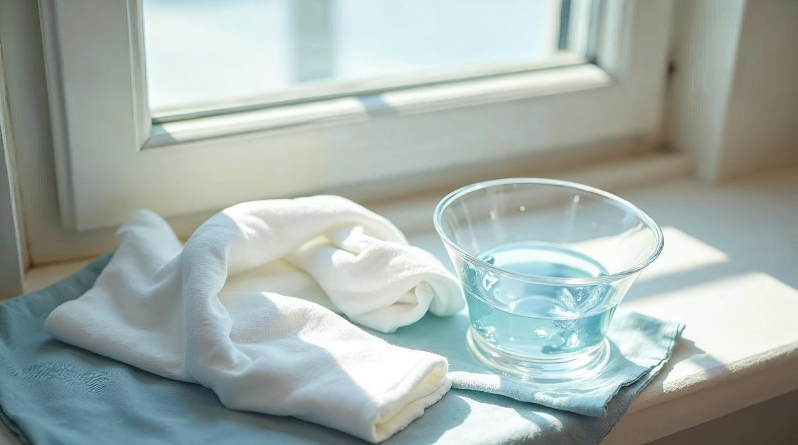
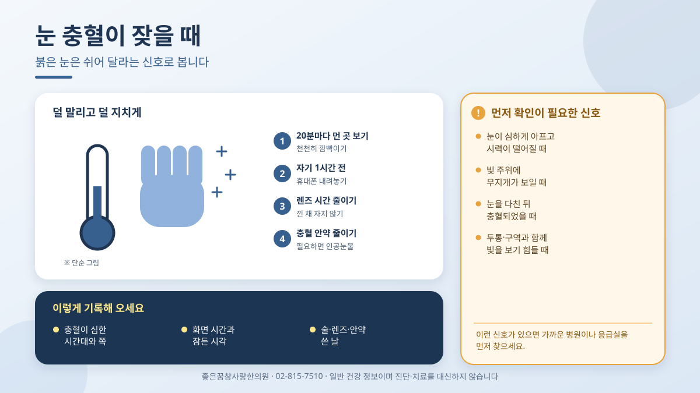

이종호 한의사 감수좋은꿈참사랑한의원 대표원장 (한의사 면허번호 19769)발행 2026-11-26 · 수정 2026-11-27
이 글의 차례
아침에 세수를 하고 거울을 보면 흰자위에 붉은 실핏줄이 가득해요. 회사에 가면 동료가 "어제 잠 못 잤어요?" 하고 묻습니다. 잠은 그럭저럭 잤는데도 눈은 늘 피곤해 보이죠. 가방 안에는 충혈을 빼 준다는 안약이 하나 들어 있고, 하루에도 몇 번씩 꺼내 넣게 됩니다.
진료실에서 눈 충혈을 말씀하시는 분께 저는 먼저 충혈이 언제 심해지는지 여쭤요. 아침에 일어났을 때인지, 오후 늦게 화면을 오래 본 뒤인지, 술을 마신 다음 날인지요. 충혈이 생기는 때를 보면 그 이유의 갈래가 꽤 많이 보이거든요.
눈의 흰자위를 덮고 있는 얇은 막을 결막이라고 하고, 그 안에는 가는 혈관이 지나가요. 평소에는 거의 보이지 않다가 눈이 자극을 받거나 지치면 이 혈관이 넓어져 붉게 보여요. 이게 우리가 흔히 말하는 충혈이에요. 눈이 쉬어 달라고 보내는 신호인 셈이죠.
그러니까 사실은 두 가지를 나눠서 보셔야 해요. '눈이 빨갛게 보이는 것'과 '눈에 병이 생긴 것'은 다른 얘기예요. 지친 날 잠깐 붉어지는 건 원래 그래요. 다만 붉은 날이 하루 이틀이 아니라 일상이 됐다면, 무엇이 눈을 계속 지치게 하는지 같이 찾아볼 때예요.
이 글에서는 눈 충혈이 잦아지는 이유를 나눠 보고, 결막염이나 결막하출혈과의 차이, 충혈 제거 안약을 쓸 때 알아 둘 것, 생활 관리와 한의원에서 함께 살피는 부분을 정리해 볼게요.
충혈은 어떻게 생기나요
결막의 혈관은 눈에 산소와 영양을 보내고, 자극이 오면 피를 더 보내 눈을 지키려 합니다. 먼지가 들어가거나, 눈이 마르거나, 염증이 생기면 혈관이 넓어지고 그만큼 흰자위가 붉어집니다. 충혈은 그 자체로 병이라기보다 눈이 무언가에 반응하고 있다는 신호입니다.
잠깐 생겼다가 쉬고 나면 가라앉는 충혈은 대개 피로나 건조처럼 일상의 자극에서 옵니다. 반대로 며칠 넘게 이어지거나, 통증과 시력 변화가 함께 있다면 눈 안쪽의 다른 문제를 확인해야 할 수 있습니다. 그래서 충혈을 볼 때는 붉은 정도보다 얼마나 오래가는지, 무엇과 함께 오는지를 먼저 살핍니다.
왜 눈 충혈이 자꾸 반복될까요
가장 흔한 이유는 눈의 건조입니다. 화면을 오래 보면 눈을 깜빡이는 횟수가 평소의 절반 이하로 줄어 눈 표면이 마릅니다. 마른 눈은 작은 자극에도 혈관이 넓어져 오후가 될수록 붉어집니다. 난방이 센 사무실, 에어컨 바람도 같은 방향으로 작용합니다.
두 번째는 잠입니다. 잠이 부족하거나 얕으면 눈이 충분히 쉬지 못하고, 아침부터 충혈된 채 하루를 시작하게 됩니다. 밤늦게까지 휴대폰을 보다 잠드는 습관은 잠도 줄이고 눈도 말리는 두 가지 일을 동시에 합니다.
세 번째는 술과 열입니다. 술을 마시면 혈관이 넓어지고 몸에 열이 오르며 눈도 붉어집니다. 맵고 기름진 음식, 사우나처럼 몸을 뜨겁게 하는 일 뒤에 눈이 붉어지는 분도 계십니다. 긴장하거나 화가 날 때 얼굴과 눈이 달아오르는 것도 비슷한 흐름입니다.
네 번째는 콘택트렌즈입니다. 렌즈를 오래 끼면 각막으로 가는 산소가 줄어 결막 혈관이 이를 채우려 넓어집니다. 렌즈를 낀 날마다 충혈이 심하다면 착용 시간부터 살펴보시는 것이 좋습니다. 렌즈 세척과 교체 주기를 지키는 것도 함께 챙겨 주세요.
한의학에서는 이런 충혈을 위로 치솟는 열, 특히 간의 열이 눈으로 오르는 모습으로 보기도 하고, 눈을 적셔 주는 진액이 부족해 마르고 붉어지는 모습으로 나누어 살피기도 합니다.
결막염, 결막하출혈과는 어떻게 다른가요
결막염은 결막에 염증이 생긴 상태입니다. 알레르기 결막염은 가려움과 맑은 눈물이 함께 오고, 세균이나 바이러스로 인한 결막염은 눈곱이 많고 이물감이 있으며 다른 사람에게 옮을 수 있습니다. 눈곱이 많고 한쪽에서 다른 쪽으로 번진다면 안과에서 확인해 주세요.
결막하출혈은 결막 아래의 가는 혈관이 터져 흰자위 일부가 새빨갛게 물든 것처럼 보이는 상태입니다. 보기에는 놀랍지만 대개 통증이나 시력 변화가 없고, 멍이 빠지듯 1~2주에 걸쳐 저절로 흡수됩니다. 기침, 재채기, 힘을 세게 준 뒤에 생기는 경우가 많습니다.
일반 충혈은 가는 실핏줄이 그물처럼 퍼져 보이고, 결막하출혈은 경계가 분명한 붉은 얼룩처럼 보입니다. 결막하출혈이 자주 반복된다면 혈압이나 피를 묽게 하는 약, 혈액 상태를 내과에서 함께 확인해 보시길 권합니다.
충혈 제거 안약은 계속 써도 되나요?
약국에서 쉽게 살 수 있는 충혈 제거 안약 가운데에는 혈관을 좁혀 붉은 기를 빠르게 빼 주는 성분이 든 것이 있습니다. 넣으면 금방 하얘지니 손이 자주 가지만, 자주 오래 쓰면 약효가 빠질 때 혈관이 더 넓어지는 반동이 생길 수 있습니다.
그러면 넣을수록 충혈이 더 자주 돌아오고, 다시 안약을 찾는 고리가 생깁니다. 또 충혈을 가리는 것일 뿐 눈이 마르거나 지친 이유는 그대로 남습니다. 충혈 제거 안약은 꼭 필요한 날에만 잠깐 쓰시고, 오래 쓰고 계셨다면 안과에서 상의해 보세요.
눈이 마른 것이 원인이라면 보존제가 없는 인공눈물이 더 맞는 경우가 많습니다. 어떤 것을 얼마나 자주 쓰면 좋을지는 안과나 약국에서 함께 정하시면 됩니다.
혈압과 눈 충혈은 관련이 있나요?
혈압이 높다고 해서 늘 눈이 충혈되는 것은 아닙니다. 하지만 혈압이 크게 흔들리는 분, 피를 묽게 하는 약을 드시는 분은 결막하출혈이 더 쉽게 생길 수 있습니다. 눈이 자주 붉어지면서 뒷목이 뻣뻣하고 얼굴로 열이 오른다면 혈압을 한 번 재 보세요.
혈압약이나 피를 묽게 하는 약을 드시고 계시다면 진료실에서 꼭 알려 주세요. 그 약들은 처방한 선생님과 상의 없이 멈추지 않으시고, 눈 증상이 걱정되면 처방한 선생님께도 함께 말씀드리시길 권합니다.
계절과 환경에 따라 달라지는 충혈
겨울에는 난방으로 실내 공기가 말라 오후가 되면 눈이 붉어지는 분이 많습니다. 책상 옆에 작은 가습기를 두거나 젖은 수건을 걸어 두는 것만으로도 눈의 건조함이 덜해질 수 있습니다.
봄에는 꽃가루와 황사, 미세먼지가 결막을 자극합니다. 외출하고 돌아오면 손을 먼저 씻고, 눈을 비비지 않도록 신경 써 주세요. 비비는 동작 자체가 혈관을 자극해 충혈을 키웁니다.
여름에는 강한 햇빛과 수영장 물, 에어컨 바람이 눈을 자극합니다. 바깥에서는 자외선을 막는 선글라스를 쓰고, 수영할 때는 물안경을 쓰시는 것이 좋습니다.
일하는 환경이 눈을 붉게 만들 때
용접, 목공, 분진이 많은 작업장, 주방처럼 연기와 열이 많은 곳에서 일하는 분은 눈이 쉽게 붉어집니다. 보호 안경을 쓰고, 쉬는 시간마다 깨끗한 물로 세안을 하며 눈 주변의 먼지를 씻어 내 주세요.
야간 근무를 하시는 분은 잠의 시간이 뒤바뀌면서 눈이 충분히 쉬지 못합니다. 낮에 잘 때는 빛을 막는 커튼이나 안대를 쓰고, 잠자는 시간만큼은 일정하게 지키려 애써 보세요.
운전을 오래 하시는 분은 앞을 뚫어지게 보느라 깜빡임이 줄어듭니다. 신호를 기다릴 때마다 눈을 몇 번 천천히 감았다 뜨는 습관을 들여 보시길 권합니다.

눈을 비비는 습관도 살펴 주세요
피곤하거나 가려울 때 무의식중에 눈을 비비는 분이 많습니다. 비비는 동안에는 시원하지만, 결막의 가는 혈관이 자극을 받아 오히려 더 붉어지고 손에 묻은 먼지와 세균이 눈으로 들어갈 수 있습니다.
눈이 가렵거나 뻐근할 때는 비비는 대신 눈을 감고 따뜻한 손바닥을 눈 위에 가볍게 덮어 보세요. 누르지 않고 덮기만 해도 눈이 한결 편안해지는 것을 느끼실 수 있습니다.
충혈과 함께 보는 몸의 흐름
진료실에서 충혈이 잦은 분들의 하루를 들어 보면 비슷한 모습이 자주 보입니다. 늦게 자고 일찍 일어나며, 커피로 하루를 버티고, 저녁에는 화면 앞에서 긴장을 풉니다. 눈은 그 하루를 고스란히 받아 내고 있는 셈입니다.
그래서 저는 눈만 따로 보기보다 잠, 식사, 긴장의 흐름을 함께 봅니다. 잠이 조금 길어지고 저녁 화면 시간이 줄어든 주에 충혈도 함께 줄어드는 모습을 기록에서 확인하시는 분이 많습니다.
먼저 이렇게 여쭙니다
처음 오시면 대략 이런 순서로 여쭙니다. 미리 떠올려 오시면 이야기가 훨씬 수월합니다.
- 충혈은 하루 중 언제, 어떤 상황에서 심한가요?
- 한쪽인가요, 양쪽인가요? 가려움, 통증, 눈곱이 있나요?
- 하루에 화면을 보는 시간은 어느 정도인가요?
- 잠은 몇 시간, 몇 시에 주무시나요?
- 충혈 제거 안약이나 인공눈물을 얼마나 자주 쓰시나요?
- 콘택트렌즈, 술, 혈압, 드시는 약은 어떤가요?
얼굴로 열이 오르는지, 입이 마르고 쓴지, 쉽게 화가 나거나 쫓기는 느낌이 있는지도 함께 여쭙니다. 이런 흐름은 눈만 보아서는 알기 어렵지만, 충혈이 반복되는 바탕을 이해하는 데 큰 단서가 됩니다.
일상에서 먼저 해 볼 수 있는 것
충혈 관리는 '눈을 덜 말리고, 덜 지치게 하고, 열을 덜 올리는 것'이라고 생각하시면 쉽습니다.
- 화면을 볼 때 20분마다 20초 먼 곳을 보며 천천히 깜빡이기
- 잠들기 1시간 전에는 휴대폰 내려놓기
- 실내 습도 맞추기, 바람이 얼굴로 직접 오지 않게
- 콘택트렌즈 착용 시간 줄이기, 렌즈를 낀 채 자지 않기
- 술 마시는 날의 횟수와 양 줄이기
- 충혈 제거 안약 대신 필요한 때 인공눈물 쓰기
눈이 피곤하고 붉을 때 따뜻한 수건을 감은 눈 위에 5분 정도 올려 두면 눈꺼풀 기름샘이 부드러워지고 눈 표면이 편안해집니다. 다만 결막염처럼 붓고 가려운 염증이 있을 때는 차가운 찜질이 더 편한 경우가 많습니다.
화면은 눈높이보다 조금 아래, 팔을 뻗은 거리쯤에 두세요. 화면을 올려다보면 눈을 더 크게 뜨게 되어 눈 표면이 빨리 마릅니다. 화면 밝기는 주변 조명과 비슷하게 맞추는 것이 눈에 편합니다. 어두운 방에서 밝은 화면만 보는 일은 피해 주세요.
한의원에서 함께 살필 수 있는 경우
- 안과에서 큰 이상은 없다고 들었지만 충혈이 자주 반복되는 경우
- 눈이 붉으면서 얼굴로 열이 오르고 뒷목과 어깨가 뻣뻣한 경우
- 잠이 얕고 쉽게 예민해지며 오후마다 눈이 지치는 경우
- 충혈 제거 안약을 자주 쓰게 되어 줄이고 싶은 경우
좋은꿈참사랑한의원에서는 모든 분의 맥을 먼저 짚고, 아래 '먼저 확인이 필요한' 신호가 없는지 봅니다. 그다음 혀와 얼굴, 눈의 열감, 잠과 긴장, 소화의 흐름을 살피고, 필요하다고 판단되면 진료실에서 혈압도 재어 보며 충혈이 반복되는 몸의 바탕을 함께 정리합니다.
진찰한 내용을 바탕으로 생활에서 바꿔 볼 것 하나와 함께 침, 목과 어깨의 긴장을 푸는 관리, 한약 상담 가운데 지금 상태에 맞는 것을 정합니다. 한약을 상의할 때는 쓰시는 안약과 드시는 약을 모두 확인하고 신중히 정합니다.
안과에서 처방받은 안약은 처방대로 쓰시고, 결막염처럼 눈 자체의 염증은 안과 치료가 먼저입니다. 한의원 진료는 그 곁에서 눈이 자꾸 지치고 붉어지는 생활과 몸의 흐름을 함께 살피는 자리입니다.
이렇게 기록해 오시면 상담이 쉬워집니다
충혈은 생활과 함께 오르내려서, 짧은 기록으로도 연결이 잘 보입니다. 2주 정도만 적어 보세요.
- 충혈이 심했던 시간대와 쪽(왼쪽, 오른쪽, 양쪽)
- 그날 화면을 본 시간과 잠든 시각
- 술, 매운 음식, 사우나, 긴장한 일이 있었던 날
- 안약이나 인공눈물을 쓴 횟수
- 콘택트렌즈를 낀 시간
일주일만 적어 봐도 '잠이 짧은 다음 날', '렌즈를 오래 낀 날'처럼 충혈과 짝을 이루는 생활이 드러납니다. 그 짝 하나를 바꾸는 것이 가장 쉬운 시작입니다.
붉은 눈은 쉬어 달라는 신호입니다
눈이 붉어지면 안약으로 빨리 하얗게 만들고 싶어지죠. 그런데 충혈은 대개 눈이 지쳤거나, 말랐거나, 몸에 열이 올랐다는 신호예요. 그 신호를 가리기보다 이유를 하나씩 덜어 주면, 붉은 날이 조금씩 줄어드는 걸 느끼실 수 있어요.
몸의 열과 잠, 긴장을 살피는 건 제가 맡을게요. 대신 하나만 부탁드려요. 이번 주에는 잠들기 1시간 전에 휴대폰을 내려놓는 것, 그거 하나만 지켜 주세요. 눈이 밤새 쉬는 시간을 조금 더 벌어 주는 거예요.
딴 건 하시던 대로 편하게 하셔도 돼요. 화면을 안 볼 수는 없잖아요. 안 보는 게 아니라 쉬어 가며 잘 보면 되는 거예요. 늦게까지 휴대폰을 본 밤이 있어도 괜찮아요. 다음 날 다시 내려놓으면 됩니다.
다음에 오시면 충혈 기록부터 함께 펼쳐 볼게요. 궁금한 건 그때 편하게 물어보세요. 거울 속 눈이 조금 더 맑아 보이는 아침이 늘어 가는 걸 함께 확인하겠습니다.
이런 증상은 먼저 확인이 필요합니다
- 충혈과 함께 눈이 심하게 아프고 시력이 갑자기 떨어지거나 빛 주위에 무지개가 보이는 경우
- 눈을 다친 뒤 충혈되었거나 두통과 구역이 함께 오고 빛을 보기 힘든 경우
이런 신호가 있으면 한의원보다 가까운 병원이나 응급실을 먼저 찾으세요.
함께 읽으면 좋은 글
- 눈이 뻑뻑하고 모래가 들어간 듯 따갑거나 쉽게 피로한 안구건조증은 어떻게 살피나요?
- 눈이 가렵고 충혈되며 맑은 눈물이 흐르는 알레르기 결막염은 어떻게 살피나요?
- 눈을 많이 쓴 날 눈이 무겁고 이마와 관자놀이까지 아파 오는 안정피로 두통은 어떻게 살피나요?
- 눈꺼풀에 다래끼가 자꾸 반복해서 날 때는 무엇을 살피고 어떻게 관리하나요?
- 뒷목이 당기고 머리가 아프면 혈압이 오른 걸까요? 고혈압과 두통·뒷목 당김은 어떻게 살피나요?

여쭙는 것
- 충혈은 하루 중 언제, 어떤 상황에서 심한가요?
- 한쪽인가요, 양쪽인가요? 가려움, 통증, 눈곱이 있나요?
- 하루에 화면을 보는 시간은 어느 정도인가요?
생활에서 해 볼 것
- 화면을 볼 때 20분마다 20초 먼 곳을 보며 천천히 깜빡이기
- 잠들기 1시간 전에는 휴대폰 내려놓기
- 실내 습도 맞추기, 바람이 얼굴로 직접 오지 않게
한의원에서 함께 살필 것
- 안과에서 큰 이상은 없다고 들었지만 충혈이 자주 반복되는 경우
- 눈이 붉으면서 얼굴로 열이 오르고 뒷목과 어깨가 뻣뻣한 경우
- 잠이 얕고 쉽게 예민해지며 오후마다 눈이 지치는 경우
먼저 확인이 필요한 신호
- 충혈과 함께 눈이 심하게 아프고 시력이 갑자기 떨어지거나 빛 주위에 무지개가 보이는…
- 눈을 다친 뒤 충혈되었거나 두통과 구역이 함께 오고 빛을 보기 힘든 경우
한눈에 보는 표
| 구분 | 핵심 |
|---|---|
| 여쭙는 것 | 충혈은 하루 중 언제, 어떤 상황에서 심한가요? 한쪽인가요, 양쪽인가요? 가려움, 통증, 눈곱이 있나요? |
| 생활에서 해 볼 것 | 화면을 볼 때 20분마다 20초 먼 곳을 보며 천천히 깜빡이기 잠들기 1시간 전에는 휴대폰 내려놓기 |
| 한의원에서 함께 살필 것 | 안과에서 큰 이상은 없다고 들었지만 충혈이 자주 반복되는 경우 눈이 붉으면서 얼굴로 열이 오르고 뒷목과 어깨가 뻣뻣한 경우 |
| 먼저 확인이 필요한 신호 | 충혈과 함께 눈이 심하게 아프고 시력이 갑자기 떨어지거나 빛 주위에 무지개가 보이는 경우 눈을 다친 뒤 충혈되었거나 두통과 구역이 함께 오고 빛을 보기 힘든 경우 |
자주 묻는 질문
충혈 제거 안약은 하루에 몇 번 넣어도 되나요?
자주 오래 쓰면 약효가 빠질 때 충혈이 더 심해지는 반동이 생길 수 있습니다. 꼭 필요한 날에만 잠깐 쓰시고, 오래 쓰셨다면 안과에서 상의해 보세요.
흰자위에 빨간 얼룩이 생겼는데 괜찮나요?
통증과 시력 변화 없이 경계가 분명한 붉은 얼룩이라면 결막하출혈인 경우가 많고, 대개 1~2주에 걸쳐 흡수됩니다. 자주 반복되면 혈압과 드시는 약을 함께 확인해 보세요.
충혈이 있을 때 따뜻한 찜질과 차가운 찜질 중 무엇이 좋나요?
피로와 건조로 인한 충혈에는 따뜻한 찜질이 편한 경우가 많고, 붓고 가려운 염증이 있을 때는 차가운 찜질이 더 편할 수 있습니다.
안약을 쓰는 중에 한약을 먹어도 되나요?
쓰시는 안약과 드시는 약을 모두 확인하고 신중하게 정합니다. 처방받은 안약은 처방대로 이어 가시고 약 이름을 알려 주세요.
콘택트렌즈를 끼면 꼭 충혈이 생기나요?
모든 분이 그렇지는 않지만 오래 끼면 각막으로 가는 산소가 줄어 충혈이 생기기 쉽습니다. 착용 시간을 줄이고 렌즈를 낀 채 자지 않으시길 권합니다.
좋은꿈참사랑한의원은 재진 때 지난번 이야기부터 이어서 여쭙니다. 진료시간과 예약은 오시는 길에서 확인하세요.
어디서 상담받을 수 있나요?
좋은꿈참사랑한의원은 서울 동작구 만양로2길 2 신성빌딩 3층·5층(서울 동작구 상도동, 7호선 상도역 3번 출구 근처)에 있습니다. 한의사 3명(이종호 대표원장, 조영기 수석진료원장, 정원영 진료원장)이 진료합니다. 진료시간은 평일 09:30~20:00(점심 13:00~14:00), 토·일·공휴일 09:30~15:00이며, 방문 전 전화로 확인을 권합니다. 예약은 네이버 예약, 카카오톡 상담, 전화 02-815-7510로 받습니다.
이 글은 일반적인 건강 정보이며 개인의 진단이나 치료를 대신하지 않습니다. 증상이 있거나 복용 중인 약이 있다면 진료를 통해 확인하세요. 치료 효과는 개인마다 다를 수 있습니다.
작성 기준: 일반적으로 알려져 있는 건강 정보를 참고해 정리했습니다(대표원장 감수). 증상 기록은 1~2주 동안 하루 1회, 비슷한 시간에 적어 오시면 지난 상태와 비교하기 쉽습니다.